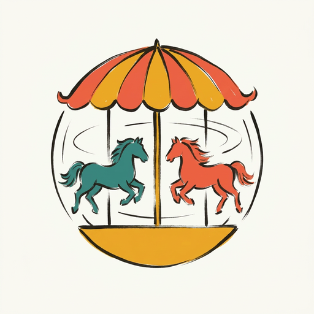

Merry-Go-Around
所有挂在这儿的页面，一个门口全在。
全部
这一趟
常看的
读经
笔记文章
工具
这一趟
日本家庭行 · 2026 年 11 月
7 页
11-13 到 11-21 的全部页面收在一个入口里；已结束，留档
常看的
待看展览 · 北京
周年常开
北京值得去的展，点开有地图，看过可以标掉
胡嘎游戏
聚会用
聚会上那副自创卡牌，网页版随手就能开局
读经
孟子 · 尽心
八十四章
原文、东汉赵岐章指、逐章解读，13.44 另附南师讲记
般若波罗蜜多心经 · 汉译逐词
对照读
一句一句对着看，词和义都在旁边
《拳意述真》里的《拳经》
索引
三十处引文排成表，七句是骨头；拳经不是九要论
朱子治家格言
全文
五百一十六字分六节，难字旧语有小注；作者不是朱熹
笔记与文章
《燃烧吧，能量》读书笔记
已读完
各章要点、哈扎人的五个文化冲突点、两页书的划线
本源校身精研 · 杭州十天
第一段
十月上旬杭州精研，按天排好的动作与要点
本源线上演训 · 二十六期
第二段
十月十四日到十一月十一日，十三节课
高效有序，只是对死亡焦虑的防御
文章
那篇写「效率」的文章，含配图
为什么你的 Token 总是不够用？
公众号
澡堂迷思系列，公众号排版预览
AI 智能体如何影响专家的判断决定
译文
Anthropic 那篇论文的逐段中译
工具
Cola Card · 随身终端 产品文档
设计稿
那块小卡片的按键逻辑与交互设计